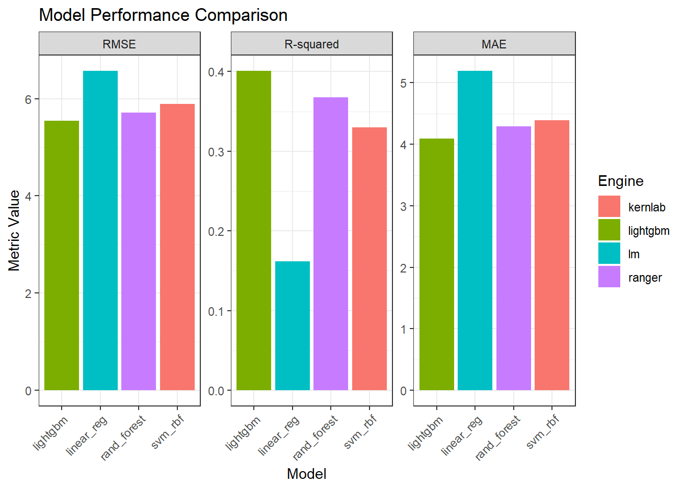
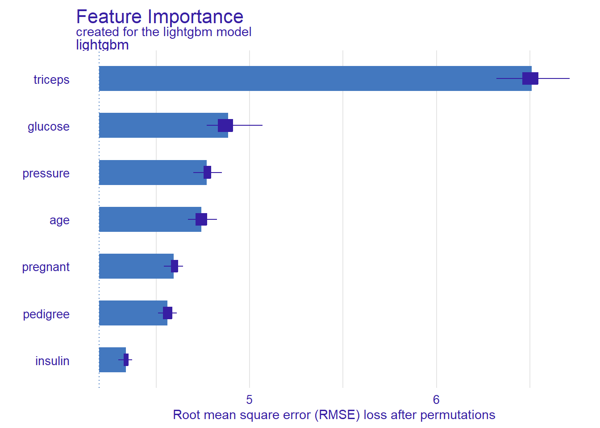
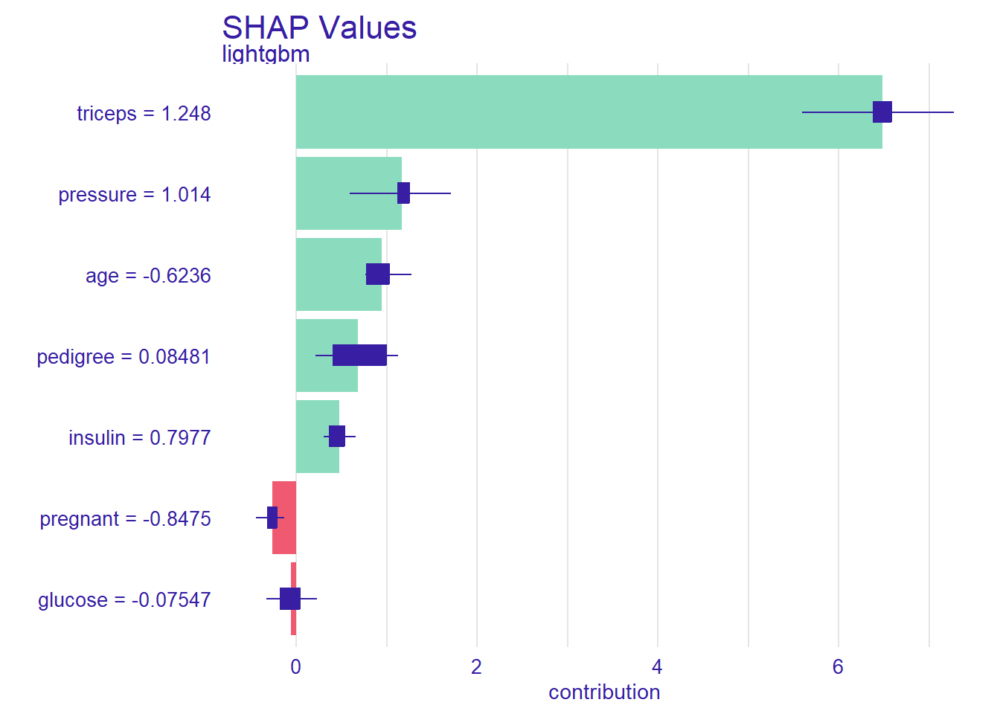

In this tutorial, we’ll use fastml to tackle a regression problem—specifically, predicting house sale prices. Just like in classification, the fastml() function streamlines the entire modeling workflow for continuous targets with minimal setup.
You’ll see how it:
Automatically handles data splitting and preprocessing,
Tunes hyperparameters across multiple regression algorithms,
Compares model performance using metrics such as RMSE and R².
Whether you’re forecasting prices, estimating risk scores, or predicting any numeric outcome, fastml() makes regression modeling just as effortless and reproducible as classification. Let’s walk through a real-world example step by step.
1. Load Packages and Data
In this regression example, we’ll use a medical dataset to predict a continuous outcome—specifically, Body Mass Index (BMI) based on various clinical features. This simulates a common scenario in healthcare: estimating a patient’s health metric using routine measurements.
We’ll use the Pima Indians Diabetes dataset, available via the mlbench package. It contains health data from adult female patients of Pima Indian heritage.
library(fastml)library(dplyr)library(mlbench)data(PimaIndiansDiabetes)# Prepare dataset: rename 'mass' to 'BMI' and drop 'diabetes'pima_reg <- PimaIndiansDiabetes %>%rename(BMI = mass) %>%select(-diabetes) %>%filter(BMI >0) # remove invalid BMI values (e.g., 0)head(pima_reg)
The resulting dataset includes 768 rows and 8 predictor variables:
pregnant: Number of times pregnant,
glucose: Plasma glucose concentration,
pressure: Diastolic blood pressure (mm Hg),
triceps: Triceps skin fold thickness (mm),
insulin: 2-hour serum insulin (μU/mL),
BMI: Body mass index (target variable here),
pedigree: Diabetes pedigree function
age: Age in years
In the next step, we’ll explore the dataset and launch a full regression workflow using fastml().
2. Train Several Regression Models
With the dataset prepared, we can now use fastml() to train and evaluate multiple regression models in a single step. Just like in classification, the function takes care of splitting the data, preprocessing, resampling, and hyperparameter tuning.
In this example, we’ll train four common regression algorithms to predict BMI:
Linear regression (linear_reg)
Support Vector Machine with radial kernel (svm_rbf)
Random Forest (rand_forest)
LightGBM (lightgbm)
Let’s run the full pipeline:
result <-fastml(data = pima_reg,label ="BMI",algorithms =c("linear_reg", "svm_rbf", "rand_forest", "lightgbm"))
Tuning grids: automatically generated per algorithm.
Finalisation: the best hyper‑parameters are selected and the workflow refit on the full training data.
You don’t need to worry about creating resampling objects or preprocessing steps manually—everything is handled internally, while remaining fully customizable via optional arguments.
In the next section, we’ll examine and compare the performance of the trained regression models using summary metrics like RMSE and R-squared.
3. Compare Model Performance
After training, you can evaluate how each model performed using the summary() function. This provides a comprehensive overview of model performance based on regression metrics such as:
RMSE (Root Mean Squared Error): Measures average prediction error magnitude.
R-squared (Coefficient of Determination): Indicates how well the model explains variability in the outcome.
MAE (Mean Absolute Error): Average absolute difference between predicted and actual values.
To view the results:
summary(result, type ="metrics")
===== fastml Model Summary =====
Task: regression
Number of Models Trained: 4
Best Model(s): lightgbm (lightgbm) (rmse: 5.5434100)
Performance Metrics (Sorted by rmse ):
------------------------------------------------------
Model Engine RMSE R-squared MAE
------------------------------------------------------
lightgbm* lightgbm 5.5434100 0.4006765 4.0925296
rand_forest ranger 5.7083442 0.3679268 4.2930432
svm_rbf kernlab 5.8889871 0.3302711 4.3937137
linear_reg lm 6.5682857 0.1621334 5.1909364
------------------------------------------------------
(*Best model)
From this output, we see that the lightgbm model achieved the lowest RMSE, indicating the most accurate predictions overall. It also has the highest R-squared, suggesting it explains a greater portion of variance in BMI compared to other models.
You can also plot the performance of all models across metrics using:
plot(result, type ="bar")

This generates a faceted bar plot, making it easy to compare RMSE, R-squared, and MAE visually.
In the next step, we’ll take a closer look at the best model’s tuned hyperparameters.
4. Inspect the Best Model
Once the models have been trained and evaluated, fastml() automatically identifies the best-performing model based on the optimization metric you specified (e.g., RMSE). You can inspect which model was selected and view its internal details using:
result$best_model_name
lightgbm
"lightgbm"
This tells us that the best-performing model is a LightGBM gradient boosting machine.
To view the trained model’s workflow—including the preprocessing steps, model specification, and tuning results—use:
result$best_model
$`lightgbm (lightgbm)`
══ Workflow [trained] ══════════════════════════════════════════════════════════
Preprocessor: Recipe
Model: boost_tree()
── Preprocessor ────────────────────────────────────────────────────────────────
4 Recipe Steps
• step_zv()
• step_dummy()
• step_center()
• step_scale()
── Model ───────────────────────────────────────────────────────────────────────
LightGBM Model (100 trees)
Objective: regression
Fitted to dataset with 7 columns
This reveals:
The full tidymodels workflow, including the recipe and the fitted model.
The model engine and its finalized hyperparameters.
A summary of the training process and resampling results.
This confirms that:
Preprocessing included zero-variance filtering, dummy encoding (if applicable), centering, and scaling.
The model is a boosted tree trained with LightGBM, using 100 trees.
You can also retrieve the exact hyperparameters selected during tuning using:
summary(result, type ="params")
Best Model hyperparameters:
Model: lightgbm (lightgbm)
mtry: 2
trees: 100
min_n: 5
tree_depth: 3
learn_rate: 0.1
loss_reduction: 1
sample_size: 0.5
This level of detail is helpful for understanding model complexity, reproducibility, and for future deployment.
In the next section, we’ll use the selected model to make predictions on new, unseen data.
5. Predict on New Observations
Once you’ve identified and reviewed the best model, you can use it to make predictions on new, unseen data.
Start by sampling a few observations from the dataset (or use an external dataset if available):
Use the predict() function to generate predicted BMI values:
predict(result, new_obs)
[1] 22.82529 22.82529 22.82529 22.82529 22.82529
6. Variable Importance & SHAP Values
In medical and clinical applications, understanding how a model arrives at its prediction is often just as crucial as the prediction itself. For this reason, fastml provides SHAP (Shapley Additive Explanations) support via the fastexplain() function—allowing you to interpret individual-level predictions from your best model.
To compute and visualize SHAP values:
fastexplain(result)
Preparation of a new explainer is initiated
-> model label : lightgbm
-> data : 605 rows 7 cols
-> data : tibble converted into a data.frame
-> target variable : 605 values
-> predict function : predict_function
-> predicted values : No value for predict function target column. ( default )
-> model_info : package , ver. , task regression
-> predicted values : numerical, min = 21.50534 , mean = 32.58835 , max = 50.39042
-> residual function : difference between y and yhat ( default )
-> residuals : numerical, min = -13.91933 , mean = 0.002388819 , max = 15.90049
A new explainer has been created!
=== DALEX Variable Importance (with Boxplots) ===

=== DALEX Shapley Values (SHAP) ===

This produces two key plots:
Feature Importance (Permutation-Based)
This plot shows how much the model’s RMSE increases when each feature is permuted (i.e., randomly shuffled).
The larger the increase in error, the more important the feature is to the model’s performance.
Triceps skinfold thickness is by far the most important feature, followed by glucose, blood pressure, and age.
SHAP Values (Local Explainability)
SHAP values break down each individual prediction into feature-level contributions.
Positive SHAP values increase the predicted BMI; negative ones decrease it.
In this example:
Triceps and pressure have strong positive contributions.
Pregnancy count and age tend to lower BMI predictions for certain individuals.
Glucose and pedigree show more mixed or subtle effects.
Interpretation Highlights
Triceps consistently emerges as the most influential variable, both globally and locally.
Some variables (like glucose) may be important for prediction accuracy (as seen in the permutation plot) but may not contribute uniformly across all patients (as reflected in SHAP values).
SHAP plots also help identify non-linear or interaction effects—for example, how pregnant affects predictions differently depending on other inputs.